Continuar de onde parou?
Deseja continuar de onde parou?

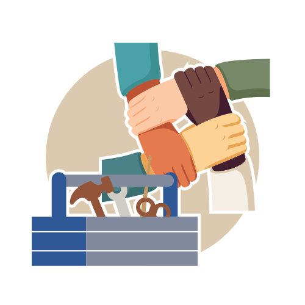
Caixa de ferramentas para situações de crise: estratégias indiretas
Objetivos
Objetivo geral:
Compreender e desenvolver ações de um percurso singular de cuidado indiretas às situações de crise, fortalecendo a continuidade do acompanhamento por meio do diálogo, da negociação, da garantia de direitos e do uso de ferramentas como a referência terapêutica, a equipe de apoio e as chaves da desinstitucionalização, articulando práticas de moradia, trabalho, cidadania, fala e escuta no território.
Ao final desta aula, você deverá ser capaz de:
- compreender por que a ação indireta no apoio a situações de crise é primordial;
- compreender o que é um percurso de cuidado singular;
- avaliar o próprio trabalho a partir dos parâmetros da desinstitucionalização;
- definir o que é a referência terapêutica;
- entender o que faz e como trabalha a equipe;
- delinear o principal objetivo e método: sustentação do diálogo e garantia de direitos;
- conhecer as ferramentas de cidadania que a referência tem em sua caixa de ferramentas;
- conhecer as principais estratégias apresentadas para pensar moradia, trabalho, fala e escuta, família e saberes tradicionais, entre outras.
Estratégias indiretas
As ações indiretas, representadas na figura seguinte, atravessam todos os momentos, sustentam e dão qualidade às ações imediatas de uma situação de crise e conectam o evento com o mundo do sujeito.
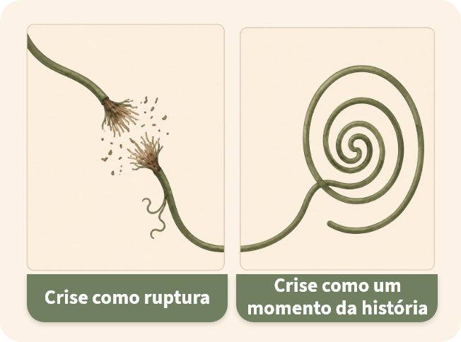
Abordaremos aqui as estratégias indiretas que se configuram como um vetor constante do cuidado e mantêm a continuidade entre o pico do evento, o que vem antes e o que vem depois desse pico. É importante ressaltar que as estratégias indiretas não têm necessariamente o objetivo de prevenir as crises, afinal todos passamos por momentos de crise, mas têm um caráter de transformação desse evento: ao mesmo tempo, transformação das condições que criam a crise tal como aparece e transformação de como acontecem as crises (de sua gravidade e dos incidentes que podem instaurar).
Figura 1 - Acompanhamento imediato e indireto e continuidade dos fios da vida
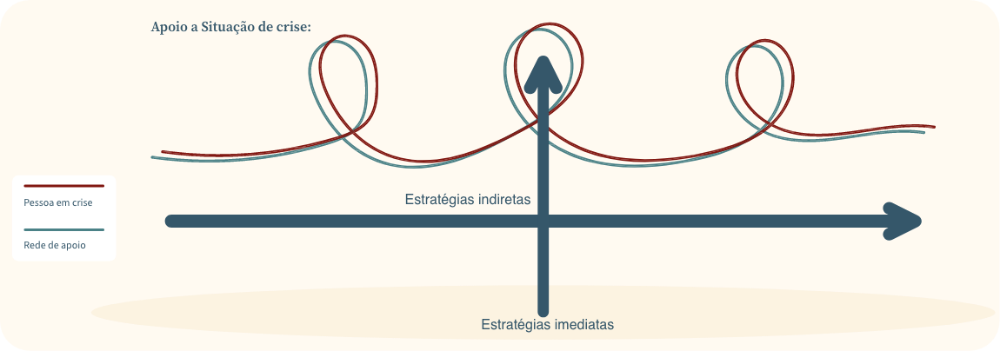
Se não fossem pensadas as necessidades de moradia de Antônia, por exemplo, a relação conflituosa e desgastada com as irmãs se manteria como ponto de tensão continuamente, colaborando na sedimentação de condições para um novo evento, com a mesma forma de expressão. Veríamos depois de alguns meses ou anos a repetição acontecer. Cada crise afirmaria ainda mais a incapacidade de Antônia de viver sozinha e a dependência quase que exclusiva da família e do serviço, o que gera melhores condições para uma crise parecida.
A questão da relação com as irmãs só foi possível ser mais bem abordada a partir da escuta de uma situação de crise em que Antônia abriu uma informação que não fazia parte ainda das conversas: “falou mal” dos gestos caridosos de uma irmã, que sentia sempre como uma esmola. A irmã mais nova, que Antônia cuidou, e agora mais velha e independente, ajudava Antônia e parecia ter uma relação próxima e carinhosa. A estagiária, estudante de terapia ocupacional, viu-se no lugar dessa irmã mais nova ao tentar negociar que Antônia não sairia do CAPS e ouvir as palavras hostis, chamando-a, entre outras coisas, pelo nome da irmã. Ao expressar uma contradição na relação com a irmã e suas dores, da maneira que lhe foi possível naquele espaço, Antônia teve uma testemunha de sua confiança, como era com a estagiária. Esta, por sua vez, estabeleceu conexões desse momento com o momento seguinte, de menor confusão, em que Antônia mal se lembrou do que havia acontecido.
No caso de Antônia, além do estabelecimento da estagiária como um ponto focal de escuta e elaboração, a equipe toma ações práticas para mediar de outra forma as relações intrafamiliares, diminuindo a tensão causada pelo desafio cotidiano da convivência. Ficou fora do radar da equipe que Antônia havia permanecido como aquela que sempre precisa de ajuda. Ainda mais quando até aquela pessoa que ela ajudava a cuidar passou a ser sua cuidadora. Profissionais tentaram fomentar as habilidades e responsabilidades que Antônia poderia exercer no sistema familiar e, além disso, revisaram a questão da moradia e de renda, recomeçaram o trabalho com a família realizando atendimentos e inclusão no grupo de família, que acontece de maneira autogestionada, um sábado por mês. Focam em nova direção no projeto terapêutico, avaliando de maneira certeira, ainda que depois da crise, alguns pontos de esgarçamento do tecido social, alguns elementos intersubjetivos e estratégias possíveis para tornar mais maleável esse tecido.
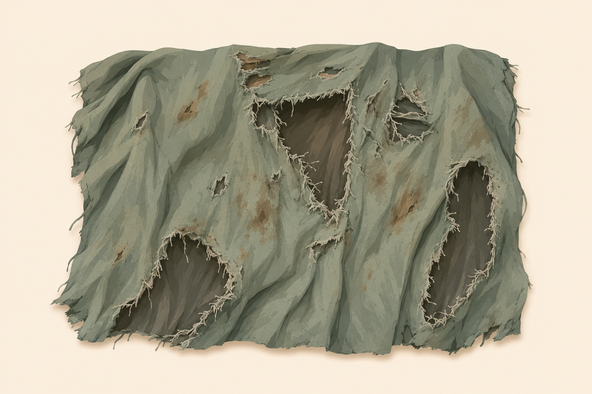
Ajudada pelo psicólogo e pelo terapeuta ocupacional, a equipe discutiu o que é essa raiva que a usuária sente da irmã, e a estagiária colocou sua pergunta sobre até onde ela entra nessa confusão de ser a irmã ou não. Perguntas importantes que a equipe discute sem chegar a uma conclusão e decide levar para a supervisão. Mesmo assim, algumas semanas depois, bem no estilo “fazejamento”, a estagiária conseguiu achar uma brecha e teve o seguinte diálogo com a usuária, depois da crise:
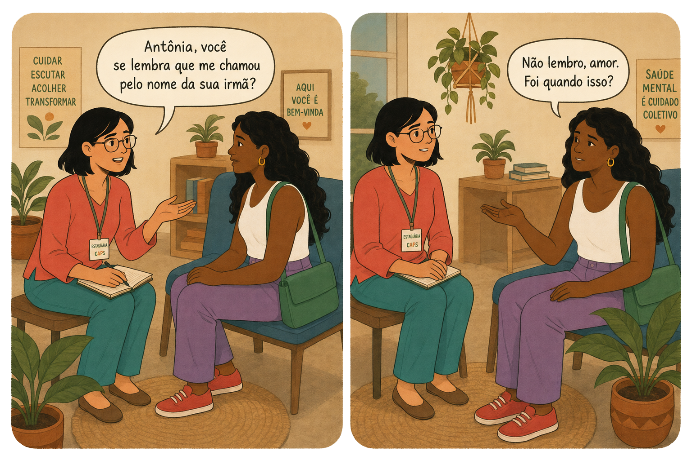
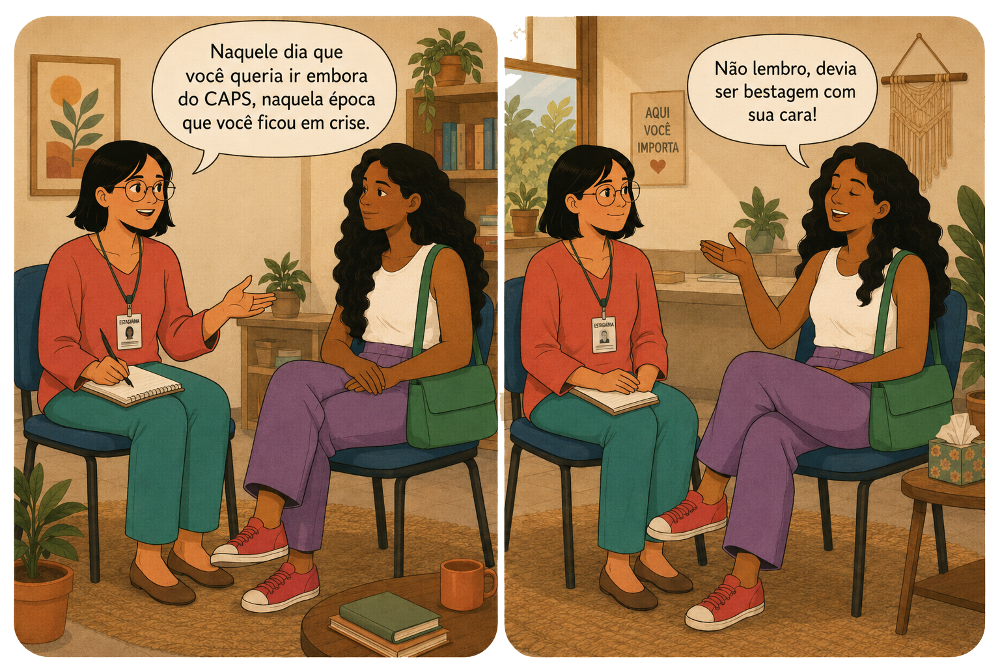
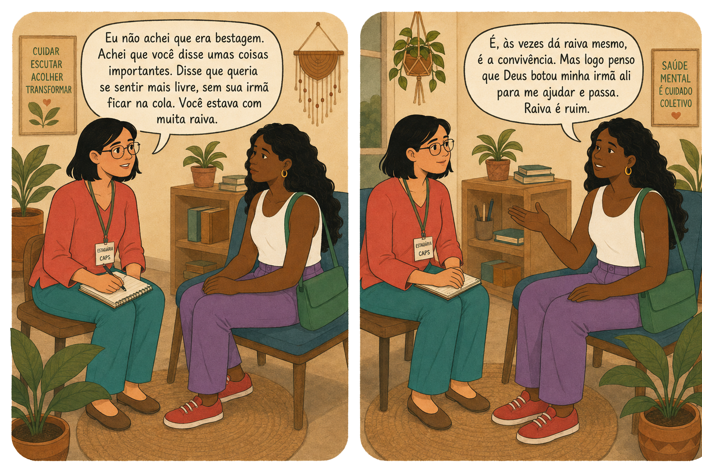
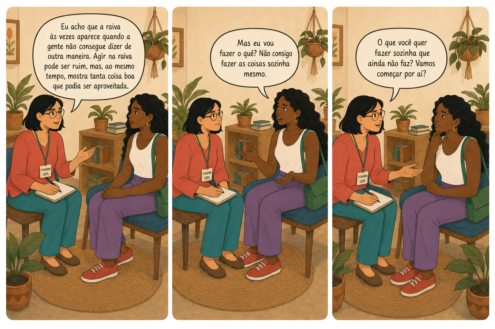
Não foi exatamente nesse dia, todavia Antônia foi colocando aos poucos certas dinâmicas da família que faziam com que ela ficasse sempre “café com leite”: cuidada, mas sem responsabilidade compartilhada e sem muita voz. O controle do dinheiro também entrou como tensão. A família, bem-intencionada e presente, acabava tentando resolver por Antônia e não percebia os efeitos que causavam nela e na família como um todo.
Para fazer a continuidade de um evento, precisamos conectar aquele evento com outros momentos e a vida cotidiana e ordinária de cada pessoa. As estratégias indiretas são o conjunto de esforços, que consistem nesse trabalho cotidiano de conexão – entre as pessoas que estão na rede de cuidados daquela pessoa e entre a pessoa e o mundo.
As estratégias indiretas são, então, as ações práticas que fazem as conexões entre a pessoa e o mundo, conexões da crise com a vida cotidiana. Ações que mantêm o tecido social maleável e evitam o esgarçamento ou rompimento dos vínculos.
Essas conexões promoverão uma mudança do olhar e alterarão o alvo de nossas intervenções: não atingiremos mais só a doença ou periculosidade, mas passamos a atuar na existência. O tecido social é que sustenta uma existência.
Uma mudança de olhar que implica pensar no simples, mas radical, fato de que é preciso intervir nas condições gerais de alguém à nossa frente, pois, “[…] muitas vezes, as pessoas não tratam da doença por causa de suas condições gerais, e muitas vezes tratar a doença não alivia as suas condições gerais” (Saúde […], 2013). O olhar quase exclusivo para a doença contribui para manter a exclusão, a negação do outro. Melhorar as condições de vida da pessoa torna-se prioridade, inclusive para aparecer o que precisa ser tratado, ou não (Braga-Campos, 2020).
Acesse o trecho da entrevista com Roberto Tykanori Kinoshita, à época Coordenador de Saúde Mental do Ministério da Saúde, sobre a prioridade no ser humano e não na doença, disponível em:
https://www.youtube.com/watch?v=Y4fDQtuT7_0.
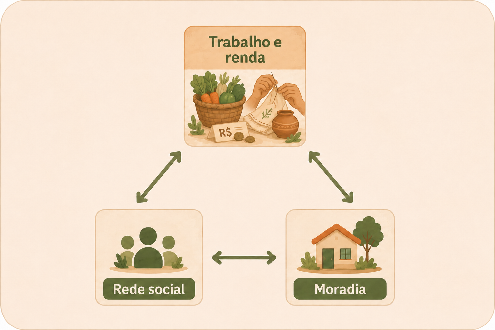
Nesta parte do curso, trataremos do trabalho diário de como passar de uma relação baseada na doença para uma relação com a existência, com o mundo daquela pessoa e como avaliar as ações realizadas. Questão complexa, sem dúvida, e que pode começar a ser pensada pela criação de conexões entre a doença e a existência, para que uma esteja relacionada a outra, já que muitas vezes a pessoa em crise aparece primeiro apenas a partir de seu diagnóstico. Lembremos que, se na crise precisamos restaurar a capacidade de comunicação entre as partes, as estratégias indiretas são fundamentais para garantir essa conversa.
Para começar a fazer as conexões e aprofundar na existência daquela pessoa, usaremos da tríade fundamental de Benedetto Saraceno: trabalho e renda, moradia e rede social. Isso ajuda o profissional de referência nesse primeiro passo de se perguntar quem é essa pessoa no mundo. E isso precisa estar presente de maneira concreta e simbólica. A inserção no mundo social daquela pessoa vai fazendo parte de toda e qualquer ação de saúde, entrando na relação entre paciente e profissional.
A pessoa deixa de ser “Antônia, a tigrona que veio do manicômio judiciário” e passa a ser Antônia Alves de Souza, que mora atrás da Rua do Quidé, irmã mais nova de Josilene, Márcia e Leila, e irmã mais velha de Joana, todas filhas do finado José Antonino, que quis ser enterrado lá na sua terra, no sul da Bahia. Antônia que ajuda a organizar a alimentação no CAPS, que frequenta e está sempre atenta ao que acontece ou deixa de acontecer no serviço, uma mulher negra que pede conselhos para Gislene sobre garrafadas e que, de vez em quando, se engraça com Robson, churrasqueiro do restaurante perto da fábrica da Ipsos, mas que, quando está em crise, prefere que Josilene ou Gislene venham acudi-la.
No percurso psiquiátrico, “o mundo” é o primeiro a ir embora, e, para reverter essa exclusão, é preciso garantir que aquela pessoa que sofre permaneça com seu lugar no mundo: sua cidadania. Pensando que estamos falando de pessoas vulnerabilizadas pela condição psíquica e pelas instituições que deveriam ajudá-la, precisaremos de ações que contenham, então, duas grandes características:
● que tenham capacidade de criar conexões e manter diálogo; e
● que façam a sustentação da garantia de direitos, de sua cidadania, mesmo em crise.
É importante dizer que as estratégias não são um conjunto de técnicas fixas, que estabelecem percursos pré-formatados dependendo quase que exclusivamente da psicopatologia ou mesmo do território. Não são um cardápio de atividades também, nem a adoção de novíssimas técnicas em saúde mental, mas são todas as ações práticas realizadas em um percurso de cuidado singularizado, podendo incluir algum cardápio de atividades e novas técnicas que surjam. Portanto, as estratégias indiretas têm muito mais a característica do “fazejamento”, aspecto comum de ótimas experiências de saúde pública brasileiras e tão bem anunciado por David Capistrano Filho. A afirmação “mais fazejamento e menos planejamento” resume que, no contato com o outro e na produção de cuidado, vale mais a “diversidade, velocidade, ousadia, criatividade e eficácia” (Lancetti, 2006, p. 13.) do que uma grade horária estabelecida previamente ou a inércia e falta de ação em face da dificuldade de articulação para intervir em um caso, por exemplo.
Passe para o lado e conheça as características das estratégias indiretas:
Como agir? Reinventando a invenção!
Clique na lâmpada para saber como agir diante da crise na perspectiva de reinventar a invenção.
Para saber mais sobre invenções de vida e saúde mental na cidade, assista ao vídeo produzido pela Associação Mente Ativa (AMAT-SBC) sobre a transformação de cuidado em São Bernardo do Campo (SP), disponível em:
https://www.youtube.com/watch?v=TeERB48kvpA
Pensar em um percurso de cuidado singularizado indica compor com essas atividades que já fazemos, mas se torna necessário reavaliar as estratégias a partir dos efeitos nos percursos de cuidado, ou seja, os efeitos no usuário, na família, na equipe e na comunidade. O grupo de teatro, apesar de parecer uma ótima opção para alguns, teve pouco efeito para Antônia em determinado momento, mas a nova função de fazer café no lanche da tarde deu lugar a falas agressivas, que viraram afiados comentários sobre a dinâmica do serviço.
Então, além das estratégias que já fazemos, temos outras ações que podemos incorporar, e, nesse meio, temos também atividades e principalmente ações que criamos especificamente para uma pessoa, em determinada situação (lembremos que é necessário ter abertura para pensar as necessidades específicas de uma pessoa ou território).
Neste módulo, você aprenderá uma forma de experimentar ações e como avaliar as ações realizadas por você e pela equipe, para agir e criar as próximas ações, sejam coletivas, individuais, temporárias ou mais perenes. Ao final do módulo, elencamos exemplos de estratégias construídas no Brasil e no mundo, os quais podem servir também para ampliar o entendimento sobre o próprio trabalho e criar estratégias em seu território.
Pensar a ação realizada: avaliação e ação, uma só unidade
A avaliação das ações de um percurso de cuidado e de uma situação de crise é também uma avaliação da capacidade de abertura e costura dos envolvidos, especialmente da equipe de referência. A situação de crise pode ajudar a ensinar sobre a reflexão das próprias ações, crítica ao saber técnico e a capacidade de mudar o sentido, de pensar o que precisa mudar para compreender o outro em sua singularidade e diferença.
Toda ação que realizamos precisa ter abertura suficiente para ser transformada a partir dos efeitos que ela mesma produz. Ou seja, é preciso que a avaliação sobre a ação seja rápida e sensível às mudanças. Isso significa também que a ação conduz o pensamento aqui, e é a partir dela que começamos. Por exemplo, quando a primeira ação é o acolhimento de alguém que chega ao serviço ou ao ponto de apoio. O acolhimento como uma ação que pode desarmar uma situação de crise no território. Com a ação, vem o confronto e a revisão – O que aconteceu no acolhimento? Que informações? Erramos? Onde e como? –, isso gera um processo que se afina progressivamente com a singularidade de cada pessoa ou coletividade.
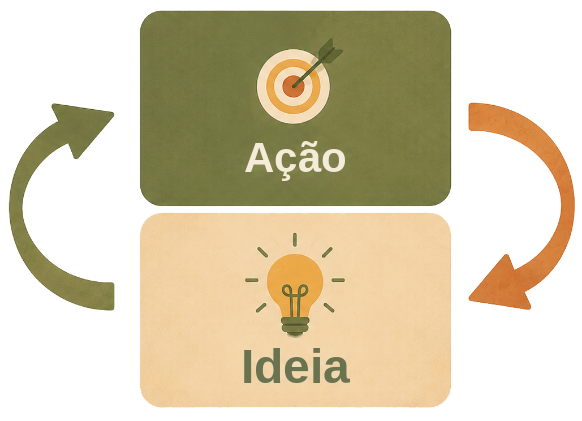
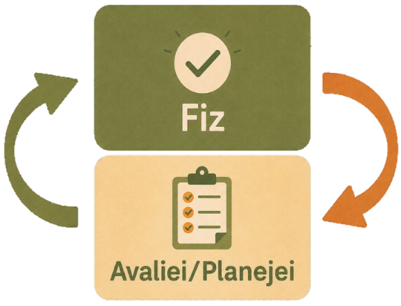
Para conhecer a história de William, selecione cada áudio ou acesse a transcrição clicando nas imagens.
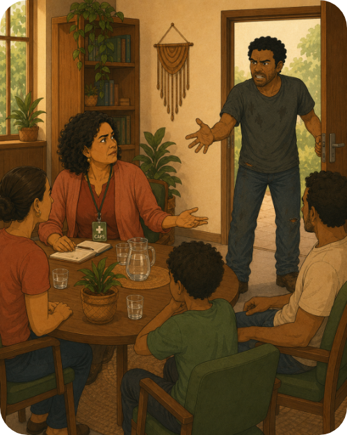
William chega ao CAPS na hora do almoço depois de meses sumido. Anda rápido e impaciente, reclamando que o serviço não serve para nada. Magda, a referência, é chamada mesmo estando em atendimento com uma família. Irrita-se e diz que outras pessoas podem lidar com William também, que ele usa crack, mas não morde.
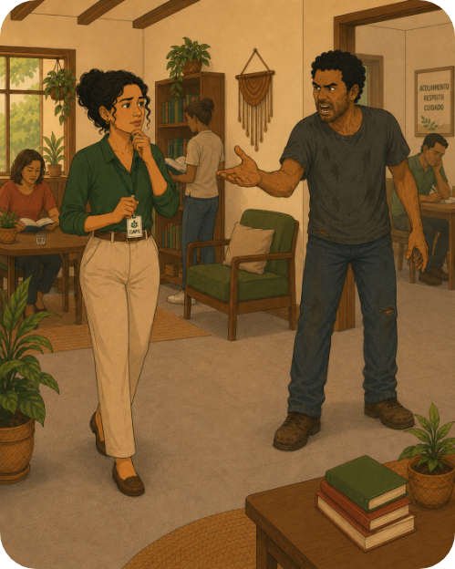
Mariana, de plantão, concorda, mas não sabe muito bem como proceder, e os outros profissionais passam a fingir que não estão ouvindo a gritaria. Mariana lembra da supervisão em que discutiram William, agora se enche de coragem e quer tentar resolver a situação com o usuário. Andando até ele, vai pensando em como começar uma conversa sem que aumente o nível de tensão e ele comece a gritar e puxar briga.
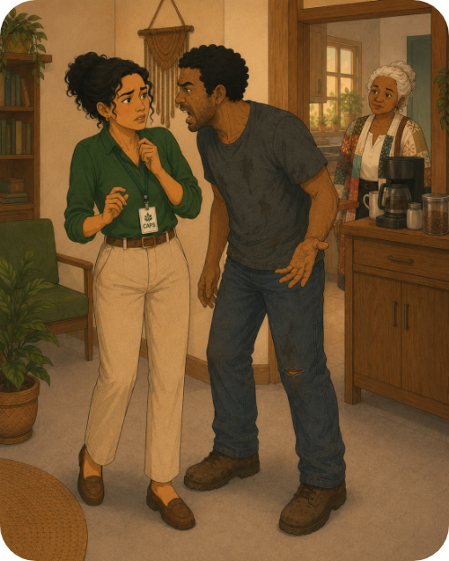
Nos poucos segundos que andou, visto que o CAPS é pequeno, chega bem perto do usuário, firme, mas delicadamente sorri. William se surpreende e Mariana pergunta se ele pode ajudá-la a fazer o café e colocar a conversa em dia.
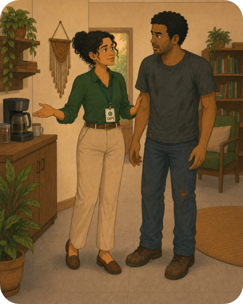
A ação de Mariana não dá muito certo de primeira, William volta a gritar e, agora no ouvido dela, diz que não é criança para aceitar comida e calar a boca. Gislene, lá da cozinha, vai espiando de rabo de olho.
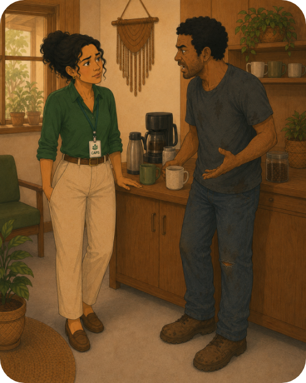
Mariana tenta de novo, mas agora foca mais no que ele está dizendo e sugere que, enquanto fazem café, ele fale da reclamação em relação ao CAPS, e se preparem para quando o gerente chegar da reunião para a qual foi.
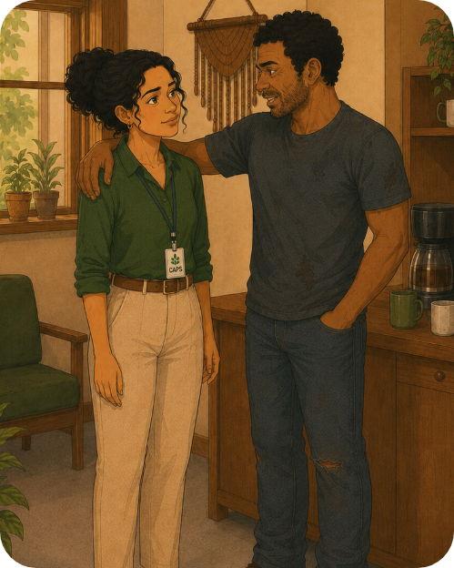
William topa o café e coloca os braços nos ombros de Mariana. Ele diz que não a conhecia, que ela é diferente dos outros. Por fim, concorda com contar onde ele estava.
As ações de Mariana foram pensadas no calor da hora, a partir da surpresa da chegada do usuário. A trabalhadora, no entanto, está alimentada pelas discussões de equipe que já tiveram sobre William e tenta fazer com que o usuário fique o máximo de tempo no CAPS. A primeira tentativa não foi tão bem-sucedida, mas a ação serviu para pensar a segunda intervenção, em que Mariana teve como direção de sua ação a sustentação do diálogo, a partir daquilo que o próprio usuário trazia (a reclamação do CAPS), e a garantia de direitos. Para isso, ela não levou a gritaria e reclamação do serviço como um ataque pessoal e resolveu enfrentar a temida conversa, que ninguém mais queria fazer.
Parte importante da ação e da avaliação é a disposição de confrontar o próprio poder, o próprio conhecimento. Perguntar-se sobre o que se sabe em determinada situação abre espaço para a crítica, para a mudança e para uma conversa franca com usuário, família, comunidade ou equipe. Quem trabalha com saúde mental precisa estar disposto a críticas e aberto a ouvir.
Tornar a crise uma cena compartilhada e a possibilidade de ver sob outra perspectiva a mesma ação.
Questionar o próprio conhecimento é olhar de outro ponto de vista a mesma atividade ou caso. Questionando se não há outras histórias e sentidos possíveis em determinada situação como forma de ver todas as facetas da existência daquela pessoa. Como quem pega uma caneca na mão e vê dentro dela, olhando por cima, e depois vira a caneca e vê de lado a alça que forma um outro buraco. Cada ângulo revela uma faceta diferente do mesmo objeto. Um pouco o que Mariana fez na segunda tentativa ao ir por um outro lado em relação à situação que William criava no CAPS segunda de manhã. Também as várias versões de Antônia, que existem ao mesmo tempo que a tigrona do hospital.
Assista ao vídeo, no qual acompanhamos Tim Tim e sua perspectiva diferente do
passeio pela rua, disponível em:
https://www.youtube.com/watch?v=1dYukOrq5RI
Ele percebe que a rua vira uma outra rua! Conseguimos pensar nos efeitos das
nossas ações para aquele usuário em específico que é diferente do meu olhar
porque está em outro lugar?

Clique nos personagens para saber mais sobre o assunto.
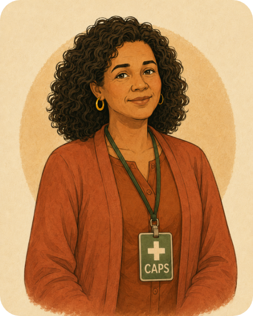
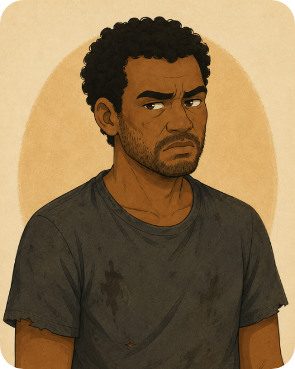
Precisamos sempre nos lembrar de que o que afeta a pessoa pode ter origem também na equipe ou nas relações de apoio. Existem estudos e histórias clínicas que indicam que crises vivenciadas por usuários tinham influência da relação intraequipe (desentendimento entre médico e paciente). Ademais, já se sabe que muitos sintomas tidos como patológicos (apatia, agressividade) são efeitos dos mecanismos institucionais (Barton, 1959).
A equipe precisa se perguntar qual a parte que lhe cabe desse latifúndio. Nessa cena, temos: os profissionais que ignoraram William dentro do CAPS, aqueles que reconheceram sua chegada e sua fala, e a família e a namorada, que aparecem depois na conversa. Esses atores não são instituições (UBS, CAPS, UPA), mas pessoas que podem estar ou não dentro da família ou do serviço de saúde. Então, não falaremos de vínculo só com UBS, mas vínculo com José, o enfermeiro da UBS, e Katia, psicóloga do CRAS, Joana (mãe), Carlos (irmão mais velho), Fernando, o vizinho do lado que anda de skate.
A pergunta sobre a situação de crise deve recair sobre todos:
O que aconteceu?
Que história contamos sobre essa crise?
É possível mais de uma história ao mesmo tempo?
Esse momento é usado para refletir criticamente, se colocar em xeque. A situação de crise traz repetições (como a recaída), mas também algo novo – se soubermos ver a diferença dentro das semelhanças. Isso exige confronto com as próprias verdades e abertura à entrada do sujeito com toda sua singularidade, inclusive pensamentos difíceis, diferentes daquilo que julgamos certo ou errado, ou até uma crise.`
Ver e escutar os efeitos
Nem toda ação gera os efeitos desejados. Por isso, é essencial manter olhos e ouvidos atentos para compreender o que cada ação provoca. A equipe de referência de Antônia, por exemplo, com o trabalho dedicado de buscar ampliar a rede de conexões, não percebeu que havia uma mudança acontecendo na família. Essa mudança intensificou a sensação de inferioridade de Antônia por causa de suas limitações no mundo.
Antônia está certa: o cuidado como piedade ou paternalismo gera vergonha e molda relações sociais marcadas somente pela posição de incapaz. O CAPS precisa criar espaços no mundo onde ela possa vivenciar a vulnerabilidade como diferença positiva, e não somente como fardo ou opressão (Basaglia, 1993). O que quer dizer que tudo bem estar vulnerável, mas que isso não signifique violência ou retirada de sua cidadania. O cuidado ou ajuda de que precisamos não pode desmerecer a humanidade dessa pessoa.
Às vezes, só percebemos o efeito semanas ou anos depois, mas tem muitas ações em que é possível percebê-los minutos ou até segundos depois de acontecido não só porque a pessoa alvo da ação nos diz, mas porque também podemos pensar a ação a partir de um norte ético e prático.
Perguntas facilitadoras: chaves de leitura da ação
Para ajudar na tarefa imprescindível de pensar e repensar nas ações práticas em curso, elencamos quatro perguntas facilitadoras. Clique nas interrogações para conhecê-las:
As perguntas são baseadas nas “cinco chaves de leitura para a compreensão da importância do processo de desinstitucionalização em todos os níveis”, publicado em relatório de gestão 2011 a 2015 (Brasil, 2016) e no texto de Kinoshita (2014). Tais perguntas podem ser respondidas em equipe, com o usuário, em avaliações de projetos terapêuticos singulares ou discussões de cenas de crise. Aliás, podem ser utilizadas em todos os níveis de ação (da gestão à relação interpessoal).
Clique nos ícones e reflita como as ações de Mariana e da equipe podem ser elaboradas.
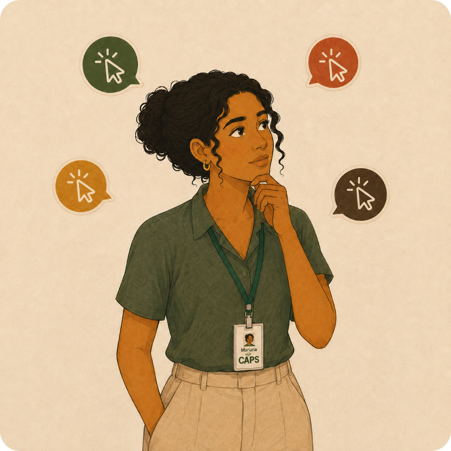
Projeto terapêutico singular
Agora que você já compreendeu o sentido das ações de cuidado (em direção à sustentação do diálogo e garantia de direitos) e já aprendeu como avaliar as ações pensando a desinstitucionalização, podemos conversar um pouco sobre o projeto terapêutico singular.
Também conhecido como PTS, é uma ferramenta que documenta e organiza as ações de um percurso de cuidado em grandes áreas. Aqui trabalharemos com a tríade fundamental de Benedetto Saraceno – trabalho e renda, moradia e redes sociais –, mas não há um modelo único e você pode também acrescentar ou subdividir as grandes áreas.
É um documento que circula entre diversos profissionais e serviços, o usuário e a família, e deixa mais claro o que está sendo pensado para cada pessoa de referência, determinados cuidados específicos e, inclusive, precauções a serem tomadas quando o usuário está em situação de crise: quem contactar, que medicação usar, entre outras. É um documento criado de forma consensual entre as diversas partes e ajuda a criar uma história dos cuidados de uma pessoa dentro de uma instituição ou rede.
Clique na caixa para ampliar a discussão.
A equipe de referência
A linha verde mais clara do desenho espiralar da Figura 1 tenta mostrar que a equipe de apoio tem a delicadeza de estar junto no tempo e espaço do outro. O modo de fazer o trabalho pode ser visto como uma dança entre dois parceiros, em que é preciso estar atento aos movimentos do outro e ao ritmo da música que toca. Quando muda a velocidade ou a direção do passo, há sempre uma comunicação acontecendo entre o eu e o você, corporalmente ou pela via verbal. Uma comunicação entre mim e você que cria um nós.
Quem faz a dança delicada do apoio precisa estar atento ao fato de que a música pode mudar, mesmo quando o cuidado cotidiano se faz de maneira exemplar (se é que isso é possível!). Se a música mudou, é necessária outra postura na pista de dança. Se o usuário demonstra que precisa de ajuda, talvez seja preciso intensificar ações, indiretas e imediatas. O pedido de ajuda pode acontecer por formas não verbais também, como em uma música que não tem letra, mas os outros instrumentos vão deixando mais intenso e mais para o grave ou o agudo, anunciando que um outro momento chegou. A pessoa não necessariamente elabora um grito de socorro, mas se compreende, pela experiência do caminho realizado conjuntamente, entre nós, que há sinais e riscos que representam uma mudança importante nesses fios de continuidade. Mesmo sem palavras, o clima da música muda as sensações percebidas.
Escute a música “Lundu Marajoara”, do Arraial do Pavulagem, a qual muda o ritmo e
o clima, disponível em:
https://www.youtube.com/watch?v=6nJ4AfBXnzQ
Para se aprofundar no assunto, assista ao vídeo do debate com Ernesto Venturini
sobre práticas em saúde mental que violam a dignidade humana, como restrição e
contenção, disponível em:
https://www.youtube.com/watch?v=xhMxZjIdXOI.
Grande parte do trabalho das estratégias indiretas, principalmente quando estão sendo usadas as imediatas, é a sustentação da capacidade de diálogo. O diálogo constitui-se nas negociações realizadas com o serviço, na possibilidade de discutir e construir normas e regras calcadas na situação concreta e não em protocolos pré-formulados. São as negociações com o técnico de referência, com a família, com a enfermeira da UPA, com o vizinho, no momento da medicação, na fila do almoço, no que vai levar de roupa se for acolhida de maneira integral por algum serviço de referência, no uso do próprio dinheiro, nas relações com amigos e no trabalho, com o que se fala e como se fala. Quanto mais vida no território, mais negociações acontecerão, mais complexo é o apoio a essa pessoa e a capacidade de inventar a partir desse diálogo. Quanto mais autonomia, mais negociações e mais trabalho a equipe tem, e não o contrário!
A equipe de referência e a sustentação do diálogo
Assista ao vídeo a seguir para acompanhar uma reunião de equipe sobre o caso de Antônia. Acesse a transcrição aqui.
Antônia, Gislene, auxiliar de enfermagem, oficineiro... Mudam-se os nomes ou as profissões e essa reunião de equipe poderia ser em qualquer lugar do Brasil. A audácia de Gislene para se fazer ouvida, as discussões sobre um cuidado que pode ser estrito e centralizador, aquela figura que faz mediações.
Quem já esteve ou está em um CAPS sabe que as reuniões de equipe podem ser densas e tensas. A resistência em participar desses espaços inevitavelmente aparece em uma equipe, e isso deve ser falado e trabalhado coletivamente para que as discussões se tornem cada vez mais ricas. Os embates vivenciados em muitas reuniões de equipe, se bem conduzidos pelos presentes, podem ser justamente o padrão-ouro daquilo que pode garantir uma relação interessante da equipe com os usuários e usuárias. É preciso sustentar a discussão e a negociação nas discussões de equipe, sem tanto medo de enfrentar assuntos difíceis.
Se pensarmos nas quatro perguntas facilitadoras, perceberemos que uma boa reunião é povoada de um conjunto plural de vozes e uma multiplicidade de imagens importantes, e que por vezes torna o clima mais tenso, sim, ruidoso.
Mas essa mistura, que muitas vezes não é consensual, é o que faz a verificação constante das nossas ações pelos pares e o que ajuda a complexificar a demanda psiquiátrica. As vozes de Gislene e do oficineiro, mais próximos de Antônia inclusive por questões de raça e classe, tiveram dificuldades de serem ouvidas, se não fosse pela insistência da própria Gislene, pelo apoio do oficineiro, que resolveu entrar na discussão, e pela intervenção da auxiliar de enfermagem, que soube marcar a presença das diversas vozes de um jeito que não houvesse prioridade de uma sobre a outra, almejando um norte do consenso.
As pessoas na situação de crise (seja a família, a equipe ou o próprio usuário) necessitam desses espaços de discussão (sejam reuniões de equipe, plantão, supervisão institucional, assembleias e reuniões de rede), e é necessário que sejam adotadas estratégias e ações práticas que sustentem a presença nesses espaços. Pensar sobre o próprio trabalho é um exercício intenso de reflexão sobre o próprio papel no cuidado, sobre o poder que temos, e isso não é fácil. Até porque implica certa redistribuição de poder, e as pessoas podem se sentir mais ou menos tomadas pelas discussões e novamente começar a evitar ou boicotar o espaço.
Por isso, é bom quando os integrantes da equipe adotam postura de abertura frente à crítica, como forma de criar um espaço respeitoso de discussão, e quando aquele que toma a palavra faça a crítica almejando tanto claridade quanto reciprocidade, mesmo sabendo que a comunicação é ruidosa. Tudo isso ajuda na sustentação de uma prática do diálogo dentro da equipe que presta apoio.
Sabe-se que nem sempre estamos na melhor das condições, mas é preferível que as críticas e as avaliações do trabalho da equipe ou de um profissional tenham as características descritas a seguir. Clique nos termos para conhecê-las:
“Gostaria de registrar que a ausência da referência na discussão clínica compromete a continuidade do cuidado.”
“Me preocupa quando a referência não é escutada, porque isso afeta diretamente o vínculo e a confiança no serviço, e o cuidado dessa usuária afeta a todos. Se precisarem, posso ajudar na negociação.”
“Essa situação revela um padrão que precisamos enfrentar: a invisibilização das referências e dos saberes construídos no cotidiano. Como isso se traduz para o usuário ou usuária?”, o que é diferente de “A Gislene é abusada, não aguento mais, e a médica folgada, nada nunca vai pra frente neste lugar”.
“Penso que a médica, Gislene e o gerente devem se sentar para conversar com Antônia e com a Dagmar, da limpeza, e combinar se tem algum horário melhor e como utilizar o banheiro da melhor forma. Talvez até fazer uma conversa na assembleia depois sobre a limpeza dos banheiros.”
Para ajudar a pensar nas práticas de diálogo que estabelecemos no CAPS, seja entre profissionais, seja com usuários, precisamos lembrar de Paulo Freire, um dos grandes intelectuais e pensadores brasileiros, que trabalhava muito bem a ideia de uma relação que promove autonomia, baseada em troca, escuta e diálogo. Uma relação que respeita as vivências socioculturais e dialoga horizontalmente realizando uma prática ética e política.
A sua pedagogia tem no diálogo uma das principais categorias, e está relacionada ao ato de conhecer o mundo. Ele dizia que o diálogo é o encontro amoroso dos homens que transformam e assim humanizam o mundo (Freire, 1980). O médico, o auxiliar de enfermagem, a cozinheira e o educador precisam estar dispostos a aprender com aqueles que estão em posição de cuidado, ou que têm diferentes poderes mesmo dentro da equipe. É necessária uma disposição de abertura para a verdade do outro, para transformá-la, e só topando transformar-se a si mesmo isso acontece. É necessário perder um pouco de poder e sair da posição de “um manda e o outro obedece”. As relações baseadas em obediência, herança de modelo escravagista que fundamenta a sociedade brasileira, ou baseadas no valor econômico de cada um mostram-se transformadas nesse processo. Sem negar diferenças, mas também não diminuindo o valor da fala e da escuta de quem tem menos poder.
Que tal chamar pessoas que trabalham com Paulo Freire no seu município para uma reunião de equipe e discutir relações transformadoras e a prática do diálogo?

A equipe de referência e a garantia de direitos
A prática dialógica presente em qualquer nível (entre trabalhadores, entre trabalhadores e usuários, entre usuário e família…) coaduna-se com um objetivo importante de atuação das equipes e pessoas de referência: a sustentação e garantia de direitos da pessoa em todas as etapas do atendimento.
A Organização Mundial da Saúde (OMS) explicita a terrível ironia de que é justamente nos espaços de cuidado que as pessoas sofrem violações (Brasil; OMS, 2015). Justamente nos espaços e com as equipes que deveriam promover os princípios básicos de humanidade há interferência nociva no cuidado. Interferir de outra maneira, ou seja, contra a repetição da quebra de confiança, do preconceito e da violação de direitos, deve ser tarefa primordial de uma equipe que pensa a severidade e a repetição das situações de crises de seus usuários. Também é tarefa primordial de todos aqueles de uma comunidade que estão envolvidos no cuidado e apoio a uma situação de crise.
Hoje sabemos que a suspensão e a não garantia dos direitos civis auxiliam no adensamento da condição psicopatológica (Brasil; OMS, 2015) e na incidência de crises apenas conformadoras da condição e não um evento passível de transformação. Por isso que Saraceno nos alerta que a relação com o usuário deve conter um terceiro: o mundo, sua inserção no mundo, a cidadania dessa pessoa.
A atuação nesse objetivo não é discurso vazio, alheio ao cotidiano árido dos serviços de saúde, mas justamente o indicativo de que a equipe e o apoio estão atuando de maneira a compreender a repetição na vida da pessoa em crise e se preocupam se a interferência a que se propõe é ou não nociva.
Não é só a pessoa em crise que repete e recai, mas a equipe que repete as mesmas respostas ao evento e acaba violando direitos de pessoas que já são severamente comprometidas em sua inserção social, vítimas de violações de direitos.
Portanto, a observação e a interferência desse objetivo são centrais na perspectiva de um trabalho que pense a crise como transformação. Assegurar a não violação de direitos humanos não é fim, mas meio.
Como fazer isso? Sugerimos aqui a observação atenta e intersetorial dos cinco temas abordados pela OMS nas práticas da Iniciativa QualityRights. As ações práticas observam esses principais pontos de garantia de direitos que podem começar a ser - familiarizados pela equipe, caso não conheçam.
Abordaremos mais detalhadamente a operação cotidiana desses temas nas estratégias de cidadania, elencadas adiante, na Caixa de Ferramentas.
Pessoa de referência: entre mim e você, nós
Como podemos ver, atuar na continuidade dos fios da vida não é tarefa que só uma pessoa dê conta. É preciso um punhado de gente, e, se não houver um mínimo de coordenação entre as pessoas envolvidas, estaremos errando em um importante foco das intervenções em crise: restabelecer a capacidade de diálogo. Se a equipe do CAPS não dialoga com a equipe da UBS, se a equipe da manhã não coordena as ações com a equipe da tarde, se o médico não dialoga com o técnico de referência, se o vizinho estafado pelo barulho não consegue diálogo com a família da pessoa em crise e, principalmente, se não insistimos no diálogo com a própria pessoa em crise, essa não comunicação aparecerá de alguma forma, muitas vezes com sofrimento e/ou violência.
Uma ou duas pessoas assumem então posição de destaque nesse processo e chamamos essa figura de técnico de referência, pessoa de referência ou simplesmente referência. Essa figura, ou dupla, ou trio, pode ter inúmeros papéis e funções a depender das necessidades e demandas da pessoa que precisa de apoio psicossocial, a depender de como cada território ou de como cada serviço se organiza (Brasil, 2004). É interessante que os pontos de apoio comunitário, seja o CAPS, seja outro serviço, pensem sobre quais atribuições de uma referência fazem mais sentido para determinado território, serviço e pessoa. Falaremos neste curso de determinadas características e funções que auxiliam no entendimento e apoio a situações de crise e que servirão para alimentar a discussão mais detalhada que você pode fazer no seu território.
Aqui a pessoa de referência tem papel importante na articulação entre as ações indiretas e o imediato e nas negociações realizadas objetivando estabelecer ou restabelecer diálogo, tendo como norte as decisões consensuadas e a garantia de direitos, focando o trabalho na intersubjetividade.
Definição e atribuições da referência
Para conhecer a história de Jaílson, clique nas setas laterais.
Como ouvimos no áudio e conforme a Figura 2, a pessoa de referência, em laranja, transita de maneira estratégica a fim de costurar esse apoio da melhor forma para o usuário.
Figura 2 - Referência no apoio
As atribuições da referência
O trabalho da referência se apoia, sem hesitação, nas estratégias indiretas, ou seja, no “fazejamento”, e faz parte do vetor de continuidade do cuidado. Por isso, ao mesmo tempo, lança mão das estratégias imediatas, garantindo atenção constante e sequência nos objetivos de sustentação ou restauração do diálogo e observação e atuação nos direitos da pessoa. A observação e a atuação em cima desses objetivos permitem fomentar os vínculos na vida da pessoa apoiada, mas também pensar na qualidade do vínculo entre aquele que precisa de apoio, equipe de apoio e as ações a serem tomadas. Os objetivos não são somente fim, são meio também.
Cabe ressaltar algumas tarefas importantes no trabalho como referência e equipe de referência. Clique nos termos para conhecer suas características:
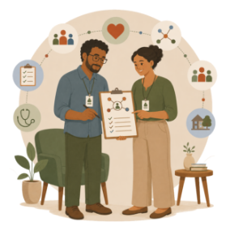
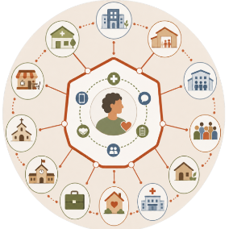
Competências
A pessoa de referência não necessita ter profissão específica, podendo se adequar a partir do que se avalia da situação e do que o próprio usuário avalia para si. Pode ser o médico, a psicóloga, o profissional da limpeza, o cozinheiro ou outro usuário. Aliás, existem experiências exitosas de usuário sendo referência de outro usuário, as quais poderiam ser consideradas com mais força no contexto brasileiro. Os redutores de danos são bons exemplos disso. Um giro efetivo na questão de quem tem poder dentro das relações de cuidado e promoção do usuário como autor do cuidado!
A estratégia de referência, justamente por não estar atrelada a uma profissão, é capaz de girar o eixo de cuidado e embaralha um pouco os poderes institucionais. Na reunião de equipe, Gislene queria discutir as implicações da medicação com os profissionais com curso superior ou da área da enfermagem, não porque conhecia tudo de remédios, apesar de ser bem versada pelo que vê e discute no CAPS, mas pelo vínculo. E esse tem valor imenso neste trabalho.
Devemos considerar também as experiências exitosas em que outro usuário ocupa a posição de referência. Dá para compreender que o poder fica ainda mais em pauta, pois aquele que antes era digno de piedade passa a sustentar um papel de cuidador, usando de sua vulnerabilidade como ferramenta de trabalho.
Imagine usuários que atuariam no seu território como referência. O que precisaria mudar na organização da equipe para que isso seja possível?
https://www.youtube.com/watch?v=Y4fDQtuT7_0.
Portanto, a competência da referência não se baseia unicamente na competência do conhecimento técnico escolarizado. Não se baseia sozinho, mas obviamente se beneficia desse saber. O conhecimento da psicóloga é de valia, assim como o saber da cozinheira que faz feira perto da casa de Antônia e conhece quase todo o sistema familiar dela. Não topava contato com ninguém, mas cedeu aos apelos da cozinheira, que aparecia todo sábado com ervas frescas e uma garrafada.
Clique nas setas para conhecer as competências da pessoa de referência.
Pensemos o que é manter a capacidade de diálogo e sustentar e construir uma vida em que haja a garantia de direitos da pessoa com desabilidade . Fazer isso implica interferir em questões estruturais de nossa sociedade e de nossos territórios. Construir e suportar conjuntamente as conexões necessárias de uma pessoa em crise que se reconhece como travesti e é lida como uma pessoa negra significa que é preciso construir pontes para além, muito além, dos serviços de saúde. É um trabalho artesanal e árduo, sem dúvida, mas com recompensas altas.
Algumas qualidades a serem exercidas pela referência e pelas equipes de referência:
● mediação e negociação de conflitos almejando a transformação e não a simplificada
administração para manter-se na mesma situação;
● conhecimento e garantia dos direitos da pessoa apoiada;
● escuta ativa e dialógica;
● vontade e disposição de articulação entre instituições e pessoas.
Para o âmbito deste curso, partimos da ideia de que a pessoa de referência é uma pessoa que pensa de maneira estratégica a construção do caso, pois é alguém que advoga pelo usuário dentro dos ritos institucionais, de rede e na comunidade. Advoga no sentido de ser aquele que pode assegurar que o usuário não fique perdido dentro dos ritos institucionais dos lugares que frequenta e que não haja violação da dignidade humana sob o manto do argumento técnico.
Riscos do papel de referência
Existem dois problemas principais que podem ser percebidos no trabalho da referência. O primeiro é o risco de paternalismo com o usuário. Em vez de sustentar as conexões e a promoção de emancipação, as referências acabam tomando posse do caso. Uma postura profissional em que o cuidado é conduzido sem considerar suficientemente a autonomia da pessoa atendida, ou a autonomia que ela pode vir a ter, mesmo que isso seja feito com boas intenções. Em vez de promover protagonismo e escuta ativa, o profissional assume o papel de sempre “saber o que é melhor” para o outro, o que pode gerar efeitos indesejados, como vergonha, sensação de incapacidade ou dependência exclusiva.
O que é importante observar? Clique nas pedras e no papel para descobrir!
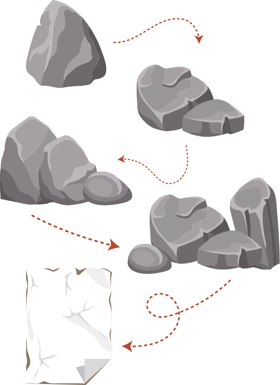
Como já foi dito, a referência é inclusiva, é uma posição que muitos podem ocupar e por vezes vai sendo ocupada por pessoas diferentes em distintos cenários. Também não é preciso esperar por uma ordem vinda da referência para realizar uma ação com determinada pessoa, para entrar em conexão com o usuário, mas é claro que a ação será mais bem realizada se estiver alinhada ao que é pensado para a vida daquela pessoa, discutido no projeto terapêutico singular.
Qual a rede formal e a informal do usuário que você é referência?
Construa uma imagem em que apareçam as pessoas que compõem a vida desse usuário.
Tente perceber se a rede aumentou ou diminuiu desde que ele foi primeiramente
acolhido ou desde a última situação de crise.
Construindo a caixa de ferramentas
Elencamos, a seguir, algumas experiências e ações que foram ou vêm sendo utilizadas no Brasil e no mundo, e que ajudam a sustentar e tecer os fios de continuidade da vida e estabelecer conexões. São ideias, relatos de experiência e possibilidades que têm potencial transformador, mas é preciso prestar atenção ao modo de uso em cada situação e percurso singular de cuidado. Assim, é preciso abertura para avaliar o sentido de uma ação para cada um, observando e considerando as questões propostas pelas chaves de leitura colocadas aqui anteriormente.
As ações selecionadas estão separadas por temas. Experimente com elas! Torça, contorça, adapte ao seu território!
Clique na caixa de ferramentas para conhecer suas características:


1. Estratégias
de cidadania


2. Estratégias
de fala e escuta

3. Estratégias
medicamentosas
4. Estratégias de apoio por pares
5. Estratégias com saberes e práticas tradicionais
6. Estratégias antecipatórias: diretivas antecipadas (DA)
7. Estratégias com família
8. Estratégias para o habitar
9. Estratégias de trabalho, renda e emprego